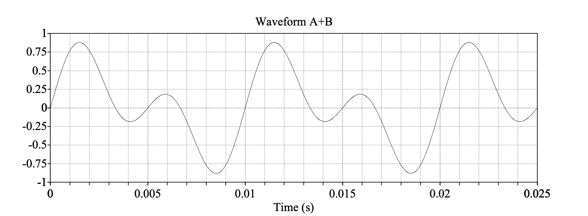

We’re going to focus on the elements of sound that are crucial for understanding hearing.
… and we’ll skip some of the other fun stuff!
What are the properties of sound?
How can we visualize them?
Duration
Amplitude
Frequency
Period
Wavelength
How far can the wave travel in a single cycle?
What is the physical distance between peaks?
Phase
We talk about sounds in Milliseconds
1 second (s) = 1000 milliseconds (ms)
Half a second (0.5 s) = 500 milliseconds (ms)
One Quarter second (0.25 s) = 250 ms
1 meter = 1000 millimeters
Duration is kind of boring for this class

What is the difference in pressure between compressions and rarefactions?
We talk about Amplitude in Decibels
We’ll get there soon!

Loudness is the perceptual correlate of amplitude
Generally, when amplitude goes up, so does perceived loudness
It’s super complicated!
Why is dropping a small book quieter than dropping a large one?
Why can high amplitude sound be damaging and shatter windows?
How does a car muffler work?


“How many times does the sound cycle in one second?”
Measured in ‘Hertz’ (Hz), also known as ‘Cycles per second’
‘How many periods can fit in one second?’
Pitch is the perceptual correlate of frequency
Generally, when frequency goes up, so does perceived pitch
It’s complicated!
How fast is it moving?
How often per second does it cycle?

Meters per second / Cycles per second
You then get meters per cycle!
λ = Wavelength in Meters
c = Speed of Sound in Air (343 m/s for this class)
f = Frequency in Hz
Why does a double-bass play lower notes than a violin?
Why do subwoofers need to be bigger?
Why do you hear your neighbors’ bass, but not their treble?

All sounds have amplitude, duration, periods, frequencies, and wavelengths
Many of these things are related to one another
These properties have real consequences for how sound actually works!
What was up with that last sound?
And why was it so bumpy?